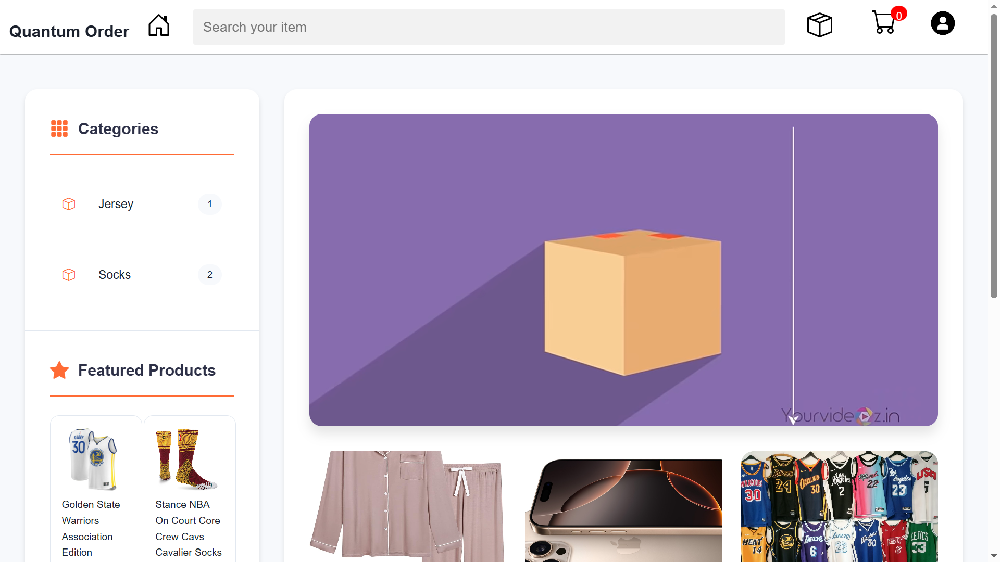

My Projects
Personal Portfolio Website
A responsive website showcasing my profile, skills, and projects.
Tools: HTML, CSS, JS
E-Diary
An e-diary system is used for managing a notes, and other information, offering a modern alternative to traditional paper diaries.
Tools: HTML, CSS, JS, MySQL, PHP
Quantum Order
A process or software that allows customers to place and manage orders, often online or through kiosks
Tools: HTML, CSS, JS, MySQL, PHP